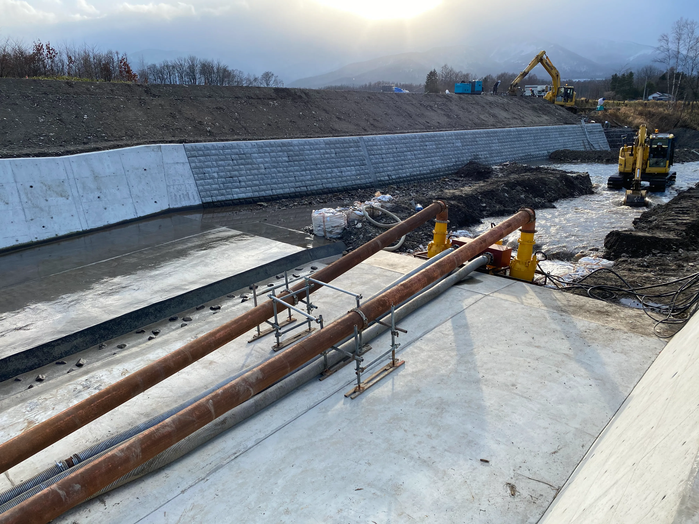

河川改修
旭川市近郊
護岸築造工事の仮排水を、計画から設置まで
※ 事例の内容・写真・工事名は仮のものです。掲載許可の確認のうえ確定します。

ご相談内容
護岸築造の締切内で水替えが必要になったものの、必要な排水量と機材の構成が決めきれない、というご相談でした。現場には商用電源がなく、発電機を含めた一式の手配もあわせてのご依頼です。
現場の状況
河川敷の締切内に湧水と河川水の回り込みがあり、排水距離は約 80 m。搬入路は仮設道路のみで、大型車両の進入に制約がありました。
当社の対応
水量の目安と排水距離から必要な吐出量を算出し、大水量ポンプ 2 台の並列運転をご提案しました。発電機・送水管を含む機材一式を揃えて搬入し、据付・配管の接続・試運転まで立ち会っています。工期中の水位変動に備え、増設時の構成も事前にお伝えしました。

似た現場について相談する
機材が決まっていなくても、ご相談いただけます。
似た現場について相談する
事例一覧へ戻る